Entregable académico de las fases 1 a 3: búsqueda local de tres datasets, selección cuantitativa, descripción exhaustiva del conjunto elegido, análisis estadístico exploratorio y requerimientos funcionales/no funcionales con justificación técnica.
Se evaluaron tres datasets disponibles localmente en scikit-learn. El dataset Breast Cancer Wisconsin Diagnostic obtuvo el mayor puntaje ponderado (97.7/100) al combinar tamaño muestral, riqueza dimensional, completitud, preparación analítica, interpretabilidad e impacto. La selección es apropiada para una práctica de maestría porque permite discutir calidad de datos, separación estadística entre clases, redundancia de variables y requerimientos de un flujo analítico reproducible sin depender de servicios externos.
Hallazgo central: la evidencia univariada más fuerte aparece en worst concave points (|d|=2.69), mientras que la correlación máxima absoluta entre predictoras alcanza 0.998. Esto sugiere alta señal diagnóstica, pero también redundancia morfológica que debe gestionarse si el proyecto avanza hacia modelado predictivo.
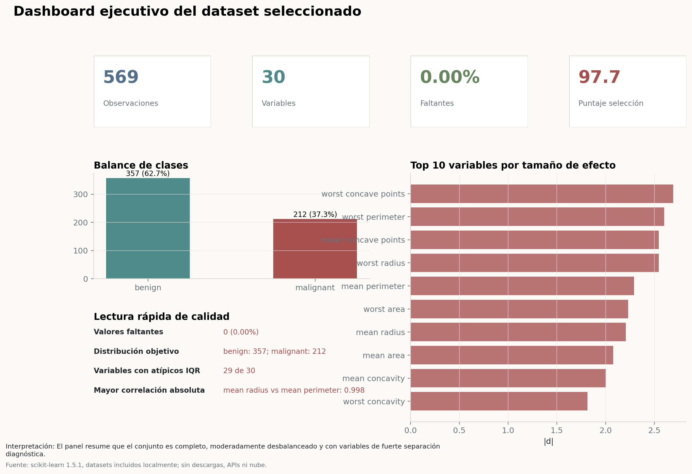
Para cumplir la restricción de no usar internet, APIs ni servicios en la nube, la búsqueda se limitó al catálogo local de datasets incluidos en scikit-learn. Esta decisión reduce el consumo computacional, elimina riesgos de disponibilidad externa y mantiene la reproducibilidad. Los candidatos fueron: Breast Cancer Wisconsin Diagnostic, Wine Recognition y Diabetes Progression.
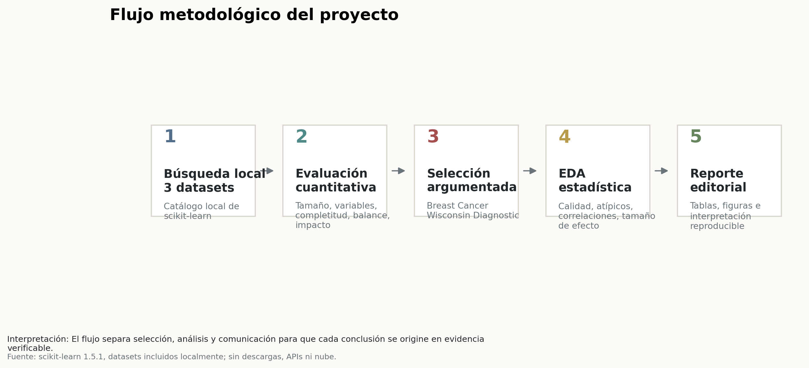
| Dataset | Dominio | Tarea | Objetivo | Observaciones | Variables predictoras | Valores faltantes (%) | Filas duplicadas | Balance / objetivo | Puntaje tamaño | Puntaje dimensionalidad | Puntaje completitud | Puntaje preparación analítica | Puntaje interpretabilidad | Puntaje impacto | Puntaje total ponderado |
|---|---|---|---|---|---|---|---|---|---|---|---|---|---|---|---|
| Breast Cancer Wisconsin Diagnostic | Salud / diagnóstico oncológico | Clasificación binaria | diagnóstico de masa mamaria | 569.0 | 30.0 | 0.0 | 0.0 | clase 0: 212 / clase 1: 357 | 100.0000 | 100.0000 | 100.0 | 94.9033 | 90.0 | 100.0 | 97.7355 |
| Diabetes Progression | Salud / progresión metabólica | Regresión | progresión de enfermedad a un año | 442.0 | 10.0 | 0.0 | 0.0 | No aplica: objetivo continuo | 88.1363 | 57.7350 | 100.0 | 100.0000 | 73.0 | 90.0 | 83.5311 |
| Wine Recognition | Química analítica / enología | Clasificación multiclase | cultivar de vino | 178.0 | 13.0 | 0.0 | 0.0 | clase 0: 59 / clase 1: 71 / clase 2: 48 | 55.9312 | 65.8281 | 100.0 | 96.1798 | 86.0 | 67.0 | 76.1754 |
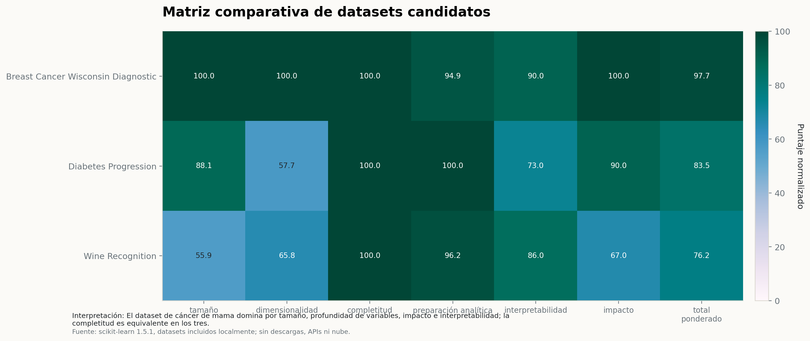
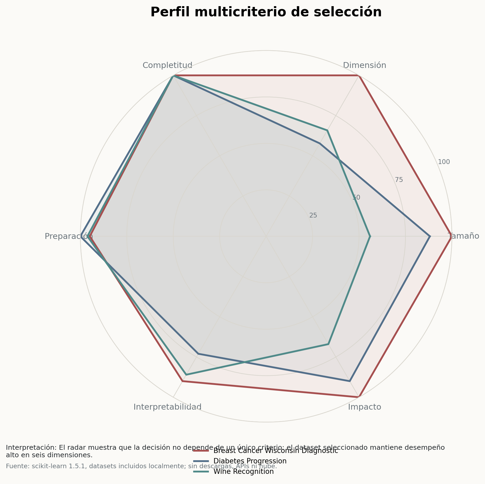
La ponderación priorizó evidencia verificable: 25% tamaño muestral, 20% dimensionalidad, 15% completitud, 15% preparación analítica, 15% interpretabilidad y 10% impacto. El dataset seleccionado domina por volumen, número de variables, completitud total y relevancia biomédica. Wine Recognition es técnicamente limpio, pero tiene menor escala e impacto para una discusión socio-técnica. Diabetes Progression posee impacto alto, aunque su target continuo y variables estandarizadas reducen interpretabilidad variable por variable.
El análisis biomédico basado en imágenes requiere transformar mediciones morfológicas en evidencia interpretable. Este dataset resume características geométricas y de textura de núcleos celulares obtenidas a partir de aspiración con aguja fina de masas mamarias.
Antes de plantear un sistema predictivo, es necesario demostrar que los datos son completos, comprensibles, estadísticamente informativos y gobernables. Sin esa base, cualquier modelo posterior podría amplificar redundancias, sesgos de clase o interpretaciones clínicas débiles.
Seleccionar y caracterizar un dataset biomédico reproducible, identificar sus variables críticas, evaluar calidad estadística y definir requerimientos de un sistema analítico que pueda sostener futuras fases de modelado con rigor académico.
El alcance cubre selección de dataset, análisis exploratorio, diccionario de datos, visualizaciones editoriales y requerimientos. No incluye entrenamiento de modelos clínicos ni recomendaciones médicas individuales, porque las fases solicitadas no lo exigen y porque se prioriza eficiencia.
Los beneficiarios son estudiantes e investigadores de ciencia de datos, docentes evaluadores, equipos de analítica biomédica y responsables de gobernanza de datos que requieran una base reproducible para decisiones metodológicas.
Se espera una selección defendible, un inventario de variables accionable, evidencia de calidad de datos, detección de señales estadísticas relevantes, visualizaciones publicables y especificación clara de requerimientos para continuidad del proyecto.
| Indicador | Resultado | Interpretación técnica |
|---|---|---|
| Observaciones | 569 | Tamaño suficiente para exploración estadística y especificación de requerimientos. |
| Variables predictoras | 30 | Cobertura morfológica amplia: medias, errores estándar y peores valores. |
| Variable objetivo | diagnosis | Etiqueta clínica binaria para comparar patrones entre masas benignas y malignas. |
| Valores faltantes | 0 (0.00%) | No se requiere imputación; se preserva trazabilidad. |
| Filas duplicadas | 0 | No se detectan registros duplicados exactos en el conjunto final. |
| Distribución objetivo | benign: 357; malignant: 212 | Existe desbalance moderado, no extremo. |
| Proporción minoritaria | 37.3% | La clase maligna conserva representación analítica suficiente. |
| Variables con atípicos IQR | 29 de 30 | Los atípicos deben revisarse como extremos biológicos plausibles, no eliminarse por defecto. |
| Mayor correlación absoluta | mean radius vs mean perimeter: 0.998 | Sugiere redundancia morfológica que debe controlarse en modelado posterior. |
| Variables con |d| >= 1 | 16 | La separación univariada es fuerte en varias variables, en especial medidas de concavidad y tamaño. |
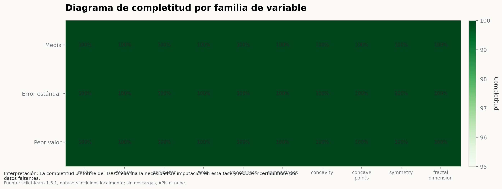
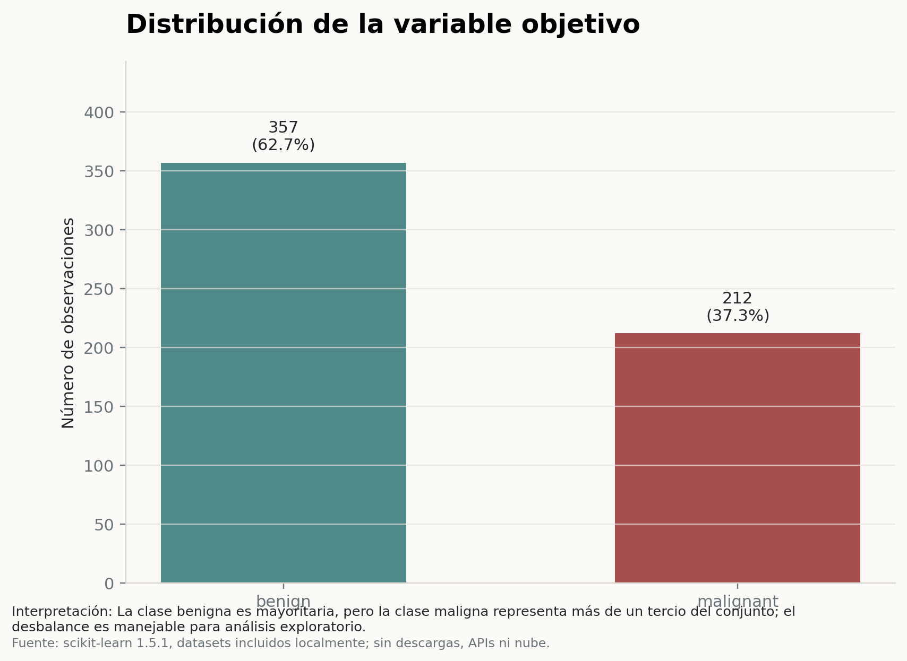
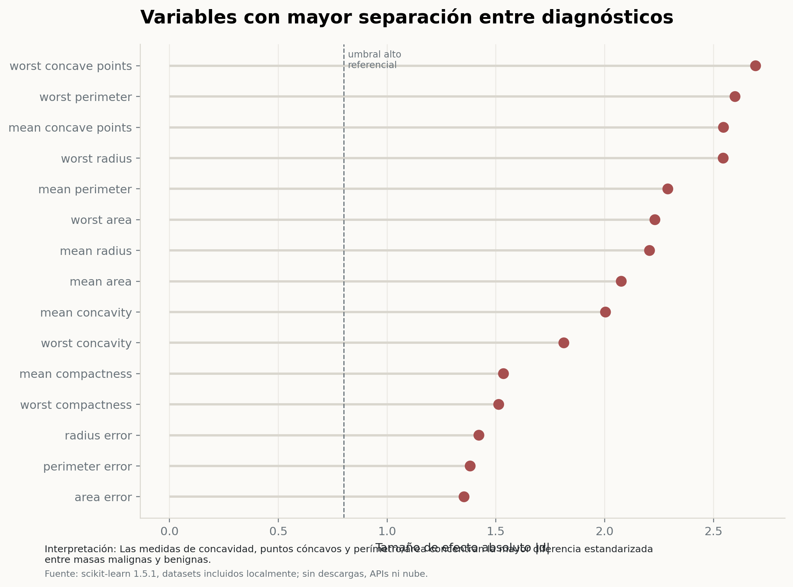
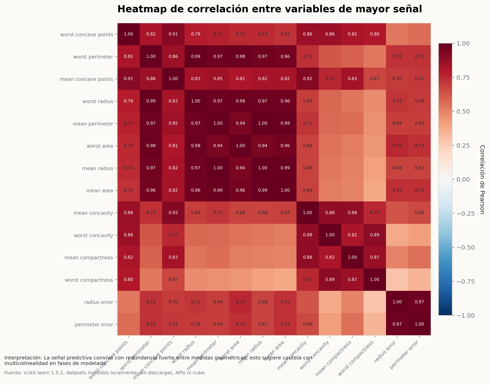
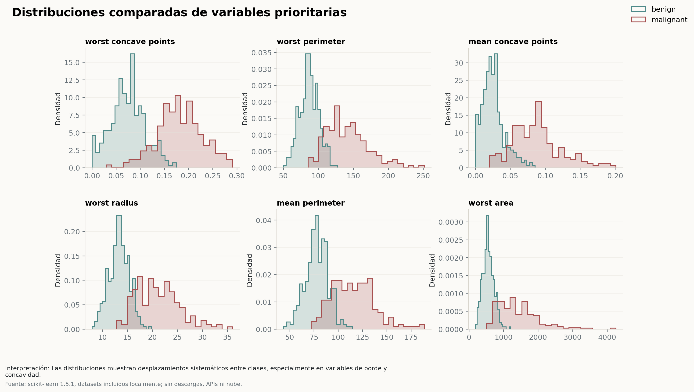
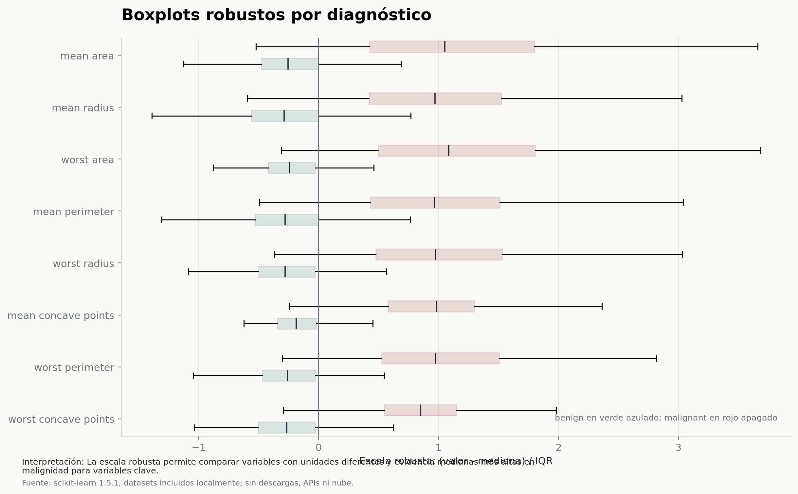
Cada variable se describe por tipo, rango observado, unidad, importancia estadística, posibles atípicos y observaciones. La importancia se calcula mediante tamaño de efecto absoluto entre clases, no mediante un modelo entrenado.
| Nombre | Tipo | Descripción | Rango / valores | Unidad | Importancia | Posibles valores atípicos | Observaciones |
|---|---|---|---|---|---|---|---|
| diagnosis | categórica nominal | Variable objetivo: diagnóstico histopatológico codificado como maligno o benigno. | malignant, benign | categoría clínica | Crítica | No aplica; se valida consistencia de etiquetas. | Es la variable de referencia para segmentar el análisis estadístico. |
| mean radius | numérica continua | Media de distancia media desde el centro hasta puntos del perímetro celular. | 6.981 a 28.11 | unidades de imagen | Muy alta | 14 casos (2.5%) fuera de [5.58, 21.9] por regla IQR. | mayor en maligno; |d|=2.21; asimetría moderada. |
| mean texture | numérica continua | Media de variabilidad de la intensidad de gris en la imagen. | 9.71 a 39.28 | desviación estándar de niveles de gris | Media | 7 casos (1.2%) fuera de [7.73, 30.2] por regla IQR. | mayor en maligno; |d|=0.94; asimetría moderada. |
| mean perimeter | numérica continua | Media de longitud del contorno de la masa celular. | 43.79 a 188.5 | unidades de imagen | Muy alta | 13 casos (2.3%) fuera de [31.8, 147] por regla IQR. | mayor en maligno; |d|=2.29; asimetría moderada. |
| mean area | numérica continua | Media de superficie proyectada de la masa celular. | 143.5 a 2501 | unidades cuadradas de imagen | Muy alta | 25 casos (4.4%) fuera de [-123, 1.33e+03] por regla IQR. | mayor en maligno; |d|=2.08; asimetría marcada. |
| mean smoothness | numérica continua | Media de variación local de longitudes de radio. | 0.05263 a 0.1634 | índice adimensional | Media | 6 casos (1.1%) fuera de [0.058, 0.134] por regla IQR. | mayor en maligno; |d|=0.79; distribución relativamente estable. |
| mean compactness | numérica continua | Media de relación de compacidad calculada como perímetro al cuadrado sobre área menos uno. | 0.01938 a 0.3454 | índice adimensional | Alta | 16 casos (2.8%) fuera de [-0.0333, 0.229] por regla IQR. | mayor en maligno; |d|=1.53; asimetría marcada. |
| mean concavity | numérica continua | Media de severidad de porciones cóncavas del contorno. | 0 a 0.4268 | índice adimensional | Muy alta | 18 casos (3.2%) fuera de [-0.122, 0.282] por regla IQR. | mayor en maligno; |d|=2.00; asimetría marcada. |
| mean concave points | numérica continua | Media de cantidad relativa de puntos cóncavos del contorno. | 0 a 0.2012 | índice adimensional | Muy alta | 10 casos (1.8%) fuera de [-0.0602, 0.155] por regla IQR. | mayor en maligno; |d|=2.55; asimetría marcada. |
| mean symmetry | numérica continua | Media de grado de simetría de la estructura celular. | 0.106 a 0.304 | índice adimensional | Media | 15 casos (2.6%) fuera de [0.111, 0.246] por regla IQR. | mayor en maligno; |d|=0.72; asimetría moderada. |
| mean fractal dimension | numérica continua | Media de aproximación de complejidad del contorno celular. | 0.04996 a 0.09744 | índice adimensional | Exploratoria | 15 casos (2.6%) fuera de [0.0451, 0.0787] por regla IQR. | mayor en benigno; |d|=0.03; asimetría marcada. |
| radius error | numérica continua | Error estándar de distancia media desde el centro hasta puntos del perímetro celular. | 0.1115 a 2.873 | unidades de imagen | Alta | 38 casos (6.7%) fuera de [-0.137, 0.849] por regla IQR. | mayor en maligno; |d|=1.42; asimetría marcada. |
| texture error | numérica continua | Error estándar de variabilidad de la intensidad de gris en la imagen. | 0.3602 a 4.885 | desviación estándar de niveles de gris | Exploratoria | 20 casos (3.5%) fuera de [-0.126, 2.43] por regla IQR. | mayor en benigno; |d|=0.02; asimetría marcada. |
| perimeter error | numérica continua | Error estándar de longitud del contorno de la masa celular. | 0.757 a 21.98 | unidades de imagen | Alta | 38 casos (6.7%) fuera de [-1.02, 5.98] por regla IQR. | mayor en maligno; |d|=1.38; asimetría marcada. |
| area error | numérica continua | Error estándar de superficie proyectada de la masa celular. | 6.802 a 542.2 | unidades cuadradas de imagen | Alta | 65 casos (11.4%) fuera de [-23.2, 86.2] por regla IQR. | mayor en maligno; |d|=1.35; asimetría marcada. |
| smoothness error | numérica continua | Error estándar de variación local de longitudes de radio. | 0.001713 a 0.03113 | índice adimensional | Exploratoria | 30 casos (5.3%) fuera de [0.000703, 0.0126] por regla IQR. | mayor en benigno; |d|=0.14; asimetría marcada. |
| compactness error | numérica continua | Error estándar de relación de compacidad calculada como perímetro al cuadrado sobre área menos uno. | 0.002252 a 0.1354 | índice adimensional | Exploratoria | 28 casos (4.9%) fuera de [-0.016, 0.0615] por regla IQR. | mayor en maligno; |d|=0.63; asimetría marcada. |
| concavity error | numérica continua | Error estándar de severidad de porciones cóncavas del contorno. | 0 a 0.396 | índice adimensional | Exploratoria | 22 casos (3.9%) fuera de [-0.0253, 0.0825] por regla IQR. | mayor en maligno; |d|=0.54; asimetría marcada. |
| concave points error | numérica continua | Error estándar de cantidad relativa de puntos cóncavos del contorno. | 0 a 0.05279 | índice adimensional | Media | 19 casos (3.3%) fuera de [-0.00297, 0.0253] por regla IQR. | mayor en maligno; |d|=0.92; asimetría marcada. |
| symmetry error | numérica continua | Error estándar de grado de simetría de la estructura celular. | 0.007882 a 0.07895 | índice adimensional | Exploratoria | 27 casos (4.7%) fuera de [0.00268, 0.036] por regla IQR. | mayor en benigno; |d|=0.01; asimetría marcada. |
| fractal dimension error | numérica continua | Error estándar de aproximación de complejidad del contorno celular. | 0.0008948 a 0.02984 | índice adimensional | Exploratoria | 28 casos (4.9%) fuera de [-0.00122, 0.00802] por regla IQR. | mayor en maligno; |d|=0.16; asimetría marcada. |
| worst radius | numérica continua | Peor valor de distancia media desde el centro hasta puntos del perímetro celular. | 7.93 a 36.04 | unidades de imagen | Muy alta | 17 casos (3.0%) fuera de [4.34, 27.5] por regla IQR. | mayor en maligno; |d|=2.54; asimetría marcada. |
| worst texture | numérica continua | Peor valor de variabilidad de la intensidad de gris en la imagen. | 12.02 a 49.54 | desviación estándar de niveles de gris | Media | 5 casos (0.9%) fuera de [8.12, 42.7] por regla IQR. | mayor en maligno; |d|=1.06; distribución relativamente estable. |
| worst perimeter | numérica continua | Peor valor de longitud del contorno de la masa celular. | 50.41 a 251.2 | unidades de imagen | Muy alta | 15 casos (2.6%) fuera de [22.2, 187] por regla IQR. | mayor en maligno; |d|=2.60; asimetría marcada. |
| worst area | numérica continua | Peor valor de superficie proyectada de la masa celular. | 185.2 a 4254 | unidades cuadradas de imagen | Muy alta | 35 casos (6.2%) fuera de [-338, 1.94e+03] por regla IQR. | mayor en maligno; |d|=2.23; asimetría marcada. |
| worst smoothness | numérica continua | Peor valor de variación local de longitudes de radio. | 0.07117 a 0.2226 | índice adimensional | Media | 7 casos (1.2%) fuera de [0.0725, 0.19] por regla IQR. | mayor en maligno; |d|=0.96; distribución relativamente estable. |
| worst compactness | numérica continua | Peor valor de relación de compacidad calculada como perímetro al cuadrado sobre área menos uno. | 0.02729 a 1.058 | índice adimensional | Alta | 16 casos (2.8%) fuera de [-0.141, 0.627] por regla IQR. | mayor en maligno; |d|=1.51; asimetría marcada. |
| worst concavity | numérica continua | Peor valor de severidad de porciones cóncavas del contorno. | 0 a 1.252 | índice adimensional | Alta | 12 casos (2.1%) fuera de [-0.288, 0.786] por regla IQR. | mayor en maligno; |d|=1.81; asimetría marcada. |
| worst concave points | numérica continua | Peor valor de cantidad relativa de puntos cóncavos del contorno. | 0 a 0.291 | índice adimensional | Muy alta | 0 casos (0.0%) fuera de [-0.0798, 0.306] por regla IQR. | mayor en maligno; |d|=2.69; distribución relativamente estable. |
| worst symmetry | numérica continua | Peor valor de grado de simetría de la estructura celular. | 0.1565 a 0.6638 | índice adimensional | Media | 23 casos (4.0%) fuera de [0.149, 0.419] por regla IQR. | mayor en maligno; |d|=0.95; asimetría marcada. |
| worst fractal dimension | numérica continua | Peor valor de aproximación de complejidad del contorno celular. | 0.05504 a 0.2075 | índice adimensional | Media | 24 casos (4.2%) fuera de [0.0405, 0.123] por regla IQR. | mayor en maligno; |d|=0.71; asimetría marcada. |
La tabla siguiente concentra percentiles, dispersión, asimetría, atípicos IQR y señal univariada. El mayor porcentaje de atípicos IQR observado es 11.4%, lo que recomienda revisión técnica de extremos antes de cualquier eliminación.
| Variable | n | Media | Desv. estándar | Mínimo | P1 | P25 | Mediana | P75 | P99 | Máximo | Asimetría | |d| | Dirección | Atípicos IQR | Atípicos IQR (%) |
|---|---|---|---|---|---|---|---|---|---|---|---|---|---|---|---|
| mean radius | 569.0 | 14.1273 | 3.5240 | 6.9810 | 8.4584 | 11.7000 | 13.3700 | 15.7800 | 24.3716 | 28.1100 | 0.9424 | 2.2055 | Mayor en maligno | 14.0 | 2.4605 |
| mean texture | 569.0 | 19.2896 | 4.3010 | 9.7100 | 10.9304 | 16.1700 | 18.8400 | 21.8000 | 30.6520 | 39.2800 | 0.6504 | 0.9423 | Mayor en maligno | 7.0 | 1.2302 |
| mean perimeter | 569.0 | 91.9690 | 24.2990 | 43.7900 | 53.8276 | 75.1700 | 86.2400 | 104.1000 | 165.7240 | 188.5000 | 0.9907 | 2.2895 | Mayor en maligno | 13.0 | 2.2847 |
| mean area | 569.0 | 654.8891 | 351.9141 | 143.5000 | 215.6640 | 420.3000 | 551.1000 | 782.7000 | 1786.6000 | 2501.0000 | 1.6457 | 2.0757 | Mayor en maligno | 25.0 | 4.3937 |
| mean smoothness | 569.0 | 0.0964 | 0.0141 | 0.0526 | 0.0687 | 0.0864 | 0.0959 | 0.1053 | 0.1329 | 0.1634 | 0.4563 | 0.7930 | Mayor en maligno | 6.0 | 1.0545 |
| mean compactness | 569.0 | 0.1043 | 0.0528 | 0.0194 | 0.0334 | 0.0649 | 0.0926 | 0.1304 | 0.2772 | 0.3454 | 1.1901 | 1.5346 | Mayor en maligno | 16.0 | 2.8120 |
| mean concavity | 569.0 | 0.0888 | 0.0797 | 0.0000 | 0.0000 | 0.0296 | 0.0615 | 0.1307 | 0.3517 | 0.4268 | 1.4012 | 2.0033 | Mayor en maligno | 18.0 | 3.1634 |
| mean concave points | 569.0 | 0.0489 | 0.0388 | 0.0000 | 0.0000 | 0.0203 | 0.0335 | 0.0740 | 0.1642 | 0.2012 | 1.1712 | 2.5452 | Mayor en maligno | 10.0 | 1.7575 |
| mean symmetry | 569.0 | 0.1812 | 0.0274 | 0.1060 | 0.1295 | 0.1619 | 0.1792 | 0.1957 | 0.2596 | 0.3040 | 0.7256 | 0.7230 | Mayor en maligno | 15.0 | 2.6362 |
| mean fractal dimension | 569.0 | 0.0628 | 0.0071 | 0.0500 | 0.0515 | 0.0577 | 0.0615 | 0.0661 | 0.0854 | 0.0974 | 1.3045 | 0.0265 | Mayor en benigno | 15.0 | 2.6362 |
| radius error | 569.0 | 0.4052 | 0.2773 | 0.1115 | 0.1197 | 0.2324 | 0.3242 | 0.4789 | 1.2913 | 2.8730 | 3.0886 | 1.4217 | Mayor en maligno | 38.0 | 6.6784 |
| texture error | 569.0 | 1.2169 | 0.5516 | 0.3602 | 0.4105 | 0.8339 | 1.1080 | 1.4740 | 2.9154 | 4.8850 | 1.6464 | 0.0171 | Mayor en benigno | 20.0 | 3.5149 |
| perimeter error | 569.0 | 2.8661 | 2.0219 | 0.7570 | 0.9532 | 1.6060 | 2.2870 | 3.3570 | 9.6900 | 21.9800 | 3.4436 | 1.3816 | Mayor en maligno | 38.0 | 6.6784 |
| area error | 569.0 | 40.3371 | 45.4910 | 6.8020 | 8.5144 | 17.8500 | 24.5300 | 45.1900 | 177.6840 | 542.2000 | 5.4472 | 1.3534 | Mayor en maligno | 65.0 | 11.4236 |
| smoothness error | 569.0 | 0.0070 | 0.0030 | 0.0017 | 0.0031 | 0.0052 | 0.0064 | 0.0081 | 0.0173 | 0.0311 | 2.3145 | 0.1387 | Mayor en benigno | 30.0 | 5.2724 |
| compactness error | 569.0 | 0.0255 | 0.0179 | 0.0023 | 0.0047 | 0.0131 | 0.0204 | 0.0324 | 0.0899 | 0.1354 | 1.9022 | 0.6327 | Mayor en maligno | 28.0 | 4.9209 |
| concavity error | 569.0 | 0.0319 | 0.0302 | 0.0000 | 0.0000 | 0.0151 | 0.0259 | 0.0420 | 0.1223 | 0.3960 | 5.1105 | 0.5416 | Mayor en maligno | 22.0 | 3.8664 |
| concave points error | 569.0 | 0.0118 | 0.0062 | 0.0000 | 0.0000 | 0.0076 | 0.0109 | 0.0147 | 0.0312 | 0.0528 | 1.4447 | 0.9228 | Mayor en maligno | 19.0 | 3.3392 |
| symmetry error | 569.0 | 0.0205 | 0.0083 | 0.0079 | 0.0105 | 0.0152 | 0.0187 | 0.0235 | 0.0522 | 0.0790 | 2.1951 | 0.0135 | Mayor en benigno | 27.0 | 4.7452 |
| fractal dimension error | 569.0 | 0.0038 | 0.0026 | 0.0009 | 0.0011 | 0.0022 | 0.0032 | 0.0046 | 0.0126 | 0.0298 | 3.9240 | 0.1615 | Mayor en maligno | 28.0 | 4.9209 |
| worst radius | 569.0 | 16.2692 | 4.8332 | 7.9300 | 9.2076 | 13.0100 | 14.9700 | 18.7900 | 30.7628 | 36.0400 | 1.1031 | 2.5439 | Mayor en maligno | 17.0 | 2.9877 |
| worst texture | 569.0 | 25.6772 | 6.1463 | 12.0200 | 15.2008 | 21.0800 | 25.4100 | 29.7200 | 41.8024 | 49.5400 | 0.4983 | 1.0605 | Mayor en maligno | 5.0 | 0.8787 |
| worst perimeter | 569.0 | 107.2612 | 33.6025 | 50.4100 | 58.2704 | 84.1100 | 97.6600 | 125.4000 | 208.3040 | 251.2000 | 1.1282 | 2.5982 | Mayor en maligno | 15.0 | 2.6362 |
| worst area | 569.0 | 880.5831 | 569.3570 | 185.2000 | 256.1920 | 515.3000 | 686.5000 | 1084.0000 | 2918.1600 | 4254.0000 | 1.8594 | 2.2302 | Mayor en maligno | 35.0 | 6.1511 |
| worst smoothness | 569.0 | 0.1324 | 0.0228 | 0.0712 | 0.0879 | 0.1166 | 0.1313 | 0.1460 | 0.1889 | 0.2226 | 0.4154 | 0.9596 | Mayor en maligno | 7.0 | 1.2302 |
| worst compactness | 569.0 | 0.2543 | 0.1573 | 0.0273 | 0.0501 | 0.1472 | 0.2119 | 0.3391 | 0.7786 | 1.0580 | 1.4736 | 1.5126 | Mayor en maligno | 16.0 | 2.8120 |
| worst concavity | 569.0 | 0.2722 | 0.2086 | 0.0000 | 0.0000 | 0.1145 | 0.2267 | 0.3829 | 0.9024 | 1.2520 | 1.1502 | 1.8119 | Mayor en maligno | 12.0 | 2.1090 |
| worst concave points | 569.0 | 0.1146 | 0.0657 | 0.0000 | 0.0000 | 0.0649 | 0.0999 | 0.1614 | 0.2692 | 0.2910 | 0.4926 | 2.6926 | Mayor en maligno | 0.0 | 0.0000 |
| worst symmetry | 569.0 | 0.2901 | 0.0619 | 0.1565 | 0.1760 | 0.2504 | 0.2822 | 0.3179 | 0.4869 | 0.6638 | 1.4339 | 0.9453 | Mayor en maligno | 23.0 | 4.0422 |
| worst fractal dimension | 569.0 | 0.0839 | 0.0181 | 0.0550 | 0.0586 | 0.0715 | 0.0800 | 0.0921 | 0.1406 | 0.2075 | 1.6626 | 0.7068 | Mayor en maligno | 24.0 | 4.2179 |
Los requerimientos se formulan para un sistema de análisis reproducible, no para un producto clínico operativo. La prioridad se asigna según riesgo metodológico, trazabilidad y valor para decisiones académicas posteriores.
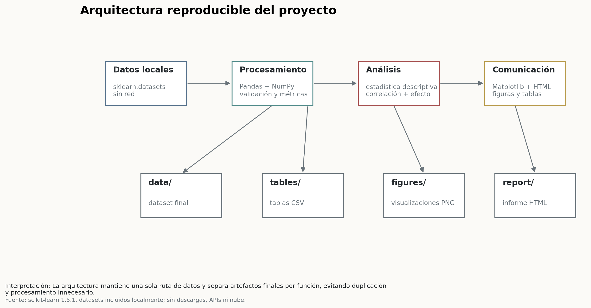
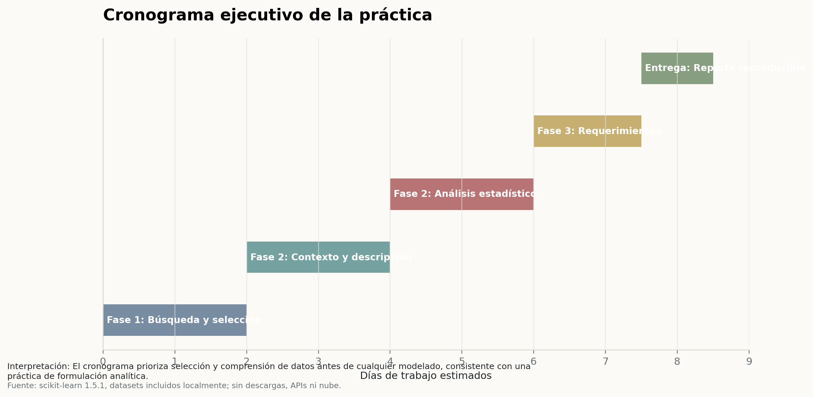
| ID | Requerimiento funcional | Categoría | Prioridad | Justificación | Impacto |
|---|---|---|---|---|---|
| RF-01 | Cargar el dataset seleccionado desde una fuente local versionada. | Ingesta | Alta | Evita dependencias externas y garantiza reproducción en entornos académicos. | Permite reconstruir el análisis sin internet ni APIs. |
| RF-02 | Validar estructura, número de variables, tipos y variable objetivo. | Calidad de datos | Alta | Previene análisis sobre columnas corruptas o incompatibles. | Reduce riesgo de conclusiones no trazables. |
| RF-03 | Calcular métricas de completitud, duplicados y balance del objetivo. | Calidad de datos | Alta | La confiabilidad del diagnóstico depende de ausencia de sesgos de captura. | Define si se requiere imputación, depuración o estratificación. |
| RF-04 | Generar comparación cuantitativa entre tres datasets candidatos. | Selección analítica | Alta | La selección debe sustentarse en criterios medibles y no en preferencia subjetiva. | Justifica el dataset ante evaluación académica. |
| RF-05 | Construir diccionario exhaustivo de variables con rango, unidad e importancia. | Documentación | Alta | La interpretación clínica necesita semántica clara por variable. | Mejora auditabilidad y transferencia del proyecto. |
| RF-06 | Calcular estadísticos descriptivos robustos por variable. | EDA | Alta | Percentiles, asimetría y atípicos revelan la estructura real de los datos. | Soporta decisiones de transformación y modelado futuro. |
| RF-07 | Cuantificar separación entre clases mediante tamaño de efecto. | Análisis estadístico | Alta | El tamaño de efecto aporta evidencia interpretable sin entrenar modelos innecesarios. | Prioriza variables relevantes para diagnóstico. |
| RF-08 | Identificar correlaciones altas entre variables predictoras. | Análisis estadístico | Media | La redundancia puede afectar interpretabilidad y estabilidad de modelos futuros. | Informa reducción dimensional o regularización posterior. |
| RF-09 | Exportar tablas finales en formato reutilizable. | Entregables | Media | Las tablas deben poder revisarse, auditarse o integrarse en anexos. | Facilita evaluación y continuidad del trabajo. |
| RF-10 | Compilar un reporte HTML editorial con figuras, tablas e interpretación. | Reporte | Alta | El entregable final debe comunicar evidencia, no solo producir archivos. | Aumenta claridad, profesionalismo y presentabilidad. |
| ID | Requerimiento no funcional | Prioridad | Justificación | Impacto |
|---|---|---|---|---|
| RNF-01 | Reproducibilidad | Alta | El flujo debe ejecutarse con un único script local y resultados deterministas. | Permite validar el trabajo en cualquier revisión académica. |
| RNF-02 | Eficiencia computacional | Alta | Solo se cargan datasets livianos y se evita entrenamiento innecesario. | Minimiza tiempo, memoria y consumo de recursos. |
| RNF-03 | Independencia de red | Alta | No se usan descargas, APIs, nube ni modelos externos. | El proyecto cumple restricciones y protege continuidad operativa. |
| RNF-04 | Trazabilidad | Alta | Cada figura y tabla declara fuente e interpretación. | Facilita auditoría de evidencia y defensa metodológica. |
| RNF-05 | Interpretabilidad | Alta | Las métricas se basan en estadística descriptiva y tamaño de efecto. | Evita cajas negras en fases tempranas del proyecto. |
| RNF-06 | Mantenibilidad | Media | El código separa carga, métricas, visualización y reporte. | Permite extender el análisis sin rehacer la base. |
| RNF-07 | Portabilidad | Media | Usa únicamente Python, Pandas, NumPy, Matplotlib y scikit-learn. | Reduce fricción de instalación y dependencia de librerías pesadas. |
| RNF-08 | Calidad visual | Alta | La salida debe usar paleta sobria, espacio en blanco y jerarquía editorial. | Mejora comunicación de hallazgos a audiencias técnicas y ejecutivas. |
| RNF-09 | Robustez | Media | Las validaciones deben fallar de forma explícita ante cambios de estructura. | Evita reportes silenciosamente inconsistentes. |
| RNF-10 | Gobernanza ética | Alta | El análisis evita inferencias clínicas individualizadas y trata el dataset como material académico. | Reduce riesgo de uso indebido en decisiones médicas reales. |
Ejecutar desde la raíz del proyecto:
& "$env:USERPROFILE\anaconda3\python.exe" src\build_project.py
Fuente de datos: scikit-learn 1.5.1, datasets incluidos localmente; sin descargas, APIs ni nube.. El script no realiza llamadas de red, no descarga archivos y no utiliza
modelos externos de IA. Las salidas finales se guardan en data/, tables/,
figures/ y report/.